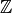

The OatBran¶
Oat Bran helps with regular expressions. Names are uppercased to avoid keyword clashes
# the class-based expressions are mostly for organization
# but sometimes they're just too clunky
LEFT_BRACKET = '['
RIGHT_BRACKET = ']'
Formal Definition¶
These are the basic building blocks of regular expressions.
| Name | Symbol |
|---|---|
| empty_string |  |
| alternative (OR) |  |
| kleene_star |  |
class FormalDefinition(object):
"""
The basic operators and elements of a regular expression
"""
empty_string = '^$'
alternative = '|'
OR = alternative
kleene_star = "*"
Groups¶
Besides the basic use of grouping with parentheses (to explicitly apply operations to multiple characters, for example), the Group hold perl ((?<expression>)) and python ((?P<expression>)) group-extensions. Since parentheses have to be symmetric these are applied as methods rather than strings that are added to other strings.
Group |
|
Group.group |
|
Group.named |
|
Group.not_followed_by |
|
Group.not_preceded_by |
|
Group.preceded_by |
|
Group.followed_by |
Quantifiers¶
Quantifiers are used to describe repetitions of patterns. The zero_or_more quantifier is an alias for the FormalDefinition.kleene_star. Although I usually think of these as suffixes, the exact and m-to-n versions need braces so the quantifiers are applied as methods to make their use uniform. I use the string format method so they will not raise errors if passed non-strings as patterns.
Quantifier |
|
Quantifier.one_or_more |
|
Quantifier.zero_or_more |
|
Quantifier.zero_or_one |
|
Quantifier.exactly |
|
Quantifier.m_to_n |
Character Classes¶
A helper with character classes (stuff put in square-brackets (‘[]’)). There are some similar patterns in other classes. I tried to put single characters in this class (e.g. digit) and multiple characters or those with quantifiers in other classes (e.g. digits or optional_digits).
class CharacterClass(object):
"""
A class to help with character classes
"""
__slots__ = ()
alpha_num = r"\w"
alpha_nums = Quantifier.one_or_more(alpha_num)
digit = r'\d'
non_digit = r'\D'
non_zero_digit = r"[1-9]"
@staticmethod
def character_class(characters):
"""
Creates a character class from the expression
:param:
- `characters`: string to convert to a class
:return: expression to match any character in expression
"""
return "[{e}]".format(e=characters)
@staticmethod
def not_in(characters):
"""
Creates a complement character class
:param:
- `characters`: characters to not match
:return: expression to match any character not in expression
"""
return "[^{e}]".format(e=characters)
Boundaries¶
Boundaries |
|
Boundaries.word |
|
Boundaries.string |
class Boundaries(object):
"""
A class to hold boundaries for expressions
"""
__slots__ = ()
string_start = "^"
string_end = "$"
@staticmethod
def word(word):
"""
Adds word boundaries to the word
:param:
- `word`: string to add word boundaries to
:return: string (raw) with word boundaries on both ends
"""
return r"\b{e}\b".format(e=word)
@staticmethod
def string(string):
"""
Adds boundaries to only match an entire string
:param:
- `string`: string to add boundaries to
:return: expression that only matches an entire line of text
"""
return r"^{e}$".format(e=string)
Common Patterns¶
These are pattens that I use a lot but I could not think of where to put them.
class CommonPatterns(object):
"""
The common patterns that were leftover
"""
__slots__ = ()
#anything and everything
anything = r"."
everything = Quantifier.zero_or_more(anything)
letter = CharacterClass.character_class(characters=string.ascii_letters
)
letters = Quantifier.one_or_more(letter)
optional_letters = Quantifier.zero_or_more(letter)
space = r'\s'
spaces = Quantifier.one_or_more(space)
optional_spaces = Quantifier.zero_or_more(space)
not_space = r'\S'
not_spaces = Quantifier.one_or_more(not_space)
Numbers¶
The numbers are broken up into types based on those listed here. I was originally using the more traditional number types but I keep forgetting which ones have zero in them so I will work with just positive/negative, non-positive/non-negative, and integer/real.
| Name | Description | Symbol |
|---|---|---|
| positive_integer |  |
|
| non_negative_integer | ||
| non_positive_integer | ||
| integer | positive, negative, 0 |  |
| real_number | Positive,negative, 0 |
Warning
The integers are allowed to match even when surrounded by punctuation. This makes it okay for sentences and csvs, etc. but means that if given a floating point number it will match the substring to the left of the decimal point (e.g. 10.00213 will match 10).
Warning
Along with the previous warning it should be noted that nonnegative_integer extracts the non-negative portion, it does not ignore negative integers. So if you have -300, the match will be 300. This may change once I start using this, but for now that is the behavior (useful for extracting ranges, maybe – nonnegative_integer + ‘-‘ + nonnegative_integer):
Note
real is treated as a super-set that matches floats or integers.
class Numbers(object):
"""
A class to hold number-related expressions
"""
__slots__ = ()
decimal_point = r'\.'
single_digit = Boundaries.word(CharacterClass.digit)
digits = Quantifier.one_or_more(CharacterClass.digit)
two_digits = Boundaries.word(CharacterClass.non_zero_digit + CharacterC
lass.digit)
one_hundreds = Boundaries.word("1" + CharacterClass.digit * 2)
optional_digits = Quantifier.zero_or_more(CharacterClass.digit)
# python considers string-start and whitespace to be different lengths
# so to avoid '.' (which is a word-boundary character) and use line-sta
#rts and ends
# and whitespace requires four alternatives
START_PREFIX = Group.preceded_by(Boundaries.string_start)
END_SUFFIX = Group.followed_by(Boundaries.string_end)
SPACE_PREFIX = Group.preceded_by(CommonPatterns.space)
SPACE_SUFFIX = Group.followed_by(CommonPatterns.space)
# Zero
ZERO = '0'
zero = (START_PREFIX + ZERO + END_SUFFIX +FormalDefinition.OR +
START_PREFIX + ZERO + SPACE_SUFFIX +FormalDefinition.OR +
SPACE_PREFIX + ZERO + END_SUFFIX +FormalDefinition.OR +
SPACE_PREFIX + ZERO + SPACE_SUFFIX)
# positive integer
z_plus = CharacterClass.non_zero_digit + optional_digits
positive_integer = (START_PREFIX + z_plus + END_SUFFIX +FormalDefinitio
n.OR +
START_PREFIX + z_plus + SPACE_SUFFIX +FormalDefinit
ion.OR +
SPACE_PREFIX + z_plus + END_SUFFIX +FormalDefinitio
n.OR +
SPACE_PREFIX + z_plus + SPACE_SUFFIX )
nonnegative_integer = (CharacterClass.non_zero_digit + optional_digits
+
r'\b' +FormalDefinition.OR +
Boundaries.word('0'))
# this disqualifies leading decimal points but not zeros
integer = (Group.not_preceded_by(decimal_point) +
Quantifier.zero_or_one('-') +
CharacterClass.non_zero_digit + optional_dig
its +
FormalDefinition.OR +
Boundaries.word('0'))
real = (Quantifier.zero_or_one('-') +
CharacterClass.digit + optional_digits +
decimal_point + optional_digits +
FormalDefinition.OR + integer)
HEX = CharacterClass.character_class(string.hexdigits)
hexadecimal = Quantifier.one_or_more(HEX)
Networking.octet |